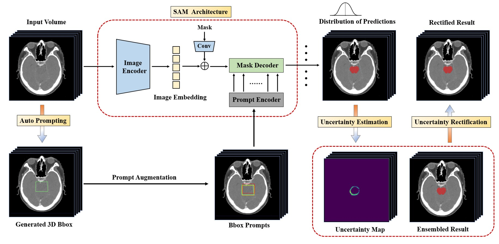
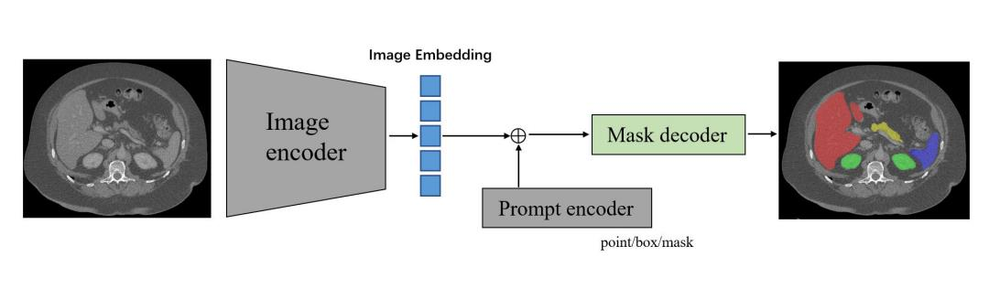

Yichi Zhang
 |
Github | Google Scholar | Semantic Scholar | ResearchGate |
Publications
2023
|
|  |
|
 |
|
|  |
|
 |
|
 |
|
 |
|
 |
|
 |
|
|
|
 |
|
Professional Activities
Journal ReviewsIEEE Transactions on Medical Imaging
IEEE Journal of Biomedical and Health Informatics
Artificial Intelligence In Medicine
Mathematical Biosciences and Engineering
IEEE/CVF Conference on Computer Vision and Pattern Recognition (CVPR), 2024
Medical Imaging with Deep Learning (MIDL), 2022-2023
IEEE International Symposium on Biomedical Imaging (ISBI), 2024
Honors & Awards
[2023] Excellent Graduate Award of Beijing
[2023] Excellent Master Thesis of Beihang University
[2022] Finalist of TOP 10 Graduate Student of Beihang University
[2022] Outstanding Graduate Student Award 2022
[2021] National Scholarship in China (Top 1.6%)
[2020] Graduate President Scholarship for Science and Technology Competition (10 every year in Beihang University)
[2020] Scholarship of Outstanding Graduate Students
[2020] Champion, Myocardial Infarction Segmentation (EMIDEC Challenge in MICCAI 2020)
[2019] First Prize of National Biomedical Engineering Innovation and Design Contest of China (Top 5%)
[2018] Special Prize of Feng Ru Cup Competition of Innovation, Beihang University (Top 0.3%)